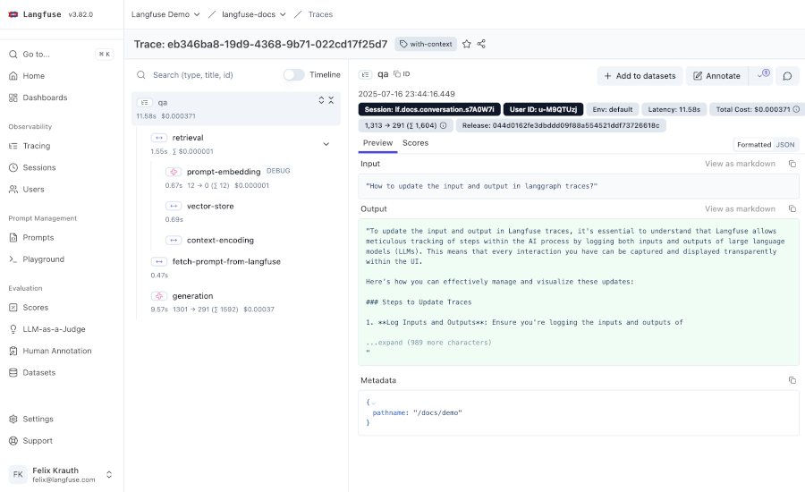

Prompt Management & Observability
This example documents how Practicus AI uses Langfuse as the central system for:
- Managing and versioning prompts
- Fetching prompts at runtime in applications and services
- Capturing traces, generations, and metrics for observability
- Integrating the LiteLLM-based AI Gateway so all LLM traffic is logged
You can execute the code cells directly during development, or render this notebook as static documentation.

Setup & configuration
Before using the examples:
- Log in to the Practicus AI Langfuse UI.
- Go to Project → Settings → API Keys and create a new API key pair.
- Copy the public and secret keys.
- Confirm the correct base URL of your Langfuse deployment (e.g.
https://langfuse.practicus.company.com).
In local development, you can either export environment variables in your shell or set them programmatically inside the notebook.
# Configure Langfuse credentials (development example)
# In production, set these as real environment variables (e.g. Kubernetes secrets).
import os
os.environ["LANGFUSE_SECRET_KEY"] = "sk-lf-..." # replace with your secret key
os.environ["LANGFUSE_PUBLIC_KEY"] = "pk-lf-..." # replace with your public key
os.environ["LANGFUSE_BASE_URL"] = "https://langfuse.practicus.company.com" # replace with your URL
Prompt catalog basics
In Practicus AI, prompts are stored and versioned in Langfuse Prompt Management.
Key concepts:
- Text prompts: simple string templates with
{{variables}}. - Chat prompts: lists of messages (
role+content) for chat models. - Labels: logical tags such as
production,staging, orexperimentalused as deployment targets. - Versions: every change to a prompt creates a new version; labels point at specific versions.
Applications never hard-code the full prompt. Instead, they fetch the latest production version from Langfuse at runtime.
# Create or update a text prompt in Langfuse
langfuse.create_prompt(
name="movie-critic",
type="text",
prompt="As a {{critic_level}} movie critic, do you like {{movie}}?",
labels=["production"], # directly promote this version to production
config={
"model": "gpt-4o",
"temperature": 0.7,
"supported_languages": ["en", "fr"],
}, # store model settings / tools / routing metadata here
)
# Fetch and compile the current production text prompt
text_prompt = langfuse.get_prompt("movie-critic")
compiled_text_prompt = text_prompt.compile(
critic_level="expert",
movie="Dune 2",
)
print("Compiled prompt:\n", compiled_text_prompt)
# Inspect underlying template and config
print("Template stored in Langfuse:\n", text_prompt.prompt)
print("\nConfig attached to prompt:")
print(text_prompt.config)
# Create or update a chat prompt in Langfuse
langfuse.create_prompt(
name="movie-critic-chat",
type="chat",
prompt=[
{"role": "system", "content": "You are an {{critic_level}} movie critic."},
{"role": "user", "content": "Do you like {{movie}}?"},
],
labels=["production"],
config={
"model": "gpt-4o",
"temperature": 0.7,
"supported_languages": ["en", "fr"],
},
)
# Fetch and compile the current production chat prompt
chat_prompt = langfuse.get_prompt("movie-critic-chat", type="chat")
compiled_chat_prompt = chat_prompt.compile(
critic_level="expert",
movie="Dune 2",
)
compiled_chat_prompt
# Raw chat template + config
print("Chat template stored in Langfuse:")
print(chat_prompt.prompt)
print("\nConfig attached to chat prompt:")
print(chat_prompt.config)
Versions and labels
Langfuse maintains a full version history of each prompt. You "deploy" a version by assigning labels like production, staging, or latest.
Patterns used in Practicus AI:
production: default label for live traffic.staging: used for pre-production or canary flows.latest: automatically maintained label pointing to the newest version.
Applications typically fetch by label, not by hard-coded version numbers.
# Fetch prompts by label or version
# Specific version
v1 = langfuse.get_prompt("movie-critic", version=1)
# Production label
prod = langfuse.get_prompt("movie-critic", label="production")
# Latest version (Langfuse maintains the 'latest' label)
latest = langfuse.get_prompt("movie-critic", label="latest")
print("prod == latest:", prod.version == latest.version)
Using prompts from applications
The usual flow in Practicus AI services:
- Fetch the latest
productionprompt from Langfuse. - Compile it with runtime variables (user input, context, language, etc.).
- Forward the compiled prompt to the AI Gateway (LiteLLM proxy) using an OpenAI-compatible API.
Below is a minimal example using the compiled chat prompt with an OpenAI-style endpoint exposed by the gateway.
import json
import requests
# Assume AI gateway is an OpenAI-compatible LiteLLM proxy
gateway_url = os.environ.get(
"PRT_GATEWAY_URL",
"https://ai-gateway.practicus.company.com/v1/chat/completions", # example default
)
gateway_api_key = os.environ.get("PRT_GATEWAY_API_KEY", "your-gateway-key")
# Use compiled_chat_prompt from above as the messages array
payload = {
"model": chat_prompt.config.get("model", "gpt-4o"),
"messages": compiled_chat_prompt,
}
response = requests.post(
gateway_url,
headers={
"Authorization": f"Bearer {gateway_api_key}",
"Content-Type": "application/json",
},
data=json.dumps(payload),
timeout=30,
)
print("Gateway status:", response.status_code)
print("Gateway response:")
print(response.text[:2000]) # truncate for documentation
Tracing and observability in Python services
Langfuse Observability is used to trace key flows in Practicus AI:
- Each user request creates a top-level trace.
- Internal steps (prompt compilation, retrieval calls, model invocations) are logged as nested observations.
- Inputs, outputs, timings, and error states are recorded automatically.
For Python services, the recommended pattern is to use the @observe() decorator.
from langfuse import observe
@observe()
def handle_user_request(user_id: str, movie: str) -> str:
"""Top-level handler: represents a single user request in Practicus AI."""
# Attach metadata to the current trace (user id, session info, etc.)
langfuse.update_current_trace(
user_id=user_id,
session_id=f"demo-session-{user_id}",
tags=["demo", "movie-critic"],
)
# Nested generation step
answer = generate_movie_opinion(movie=movie)
return answer
@observe(as_type="generation")
def generate_movie_opinion(movie: str) -> str:
"""Nested generation: uses Langfuse prompt management and the AI Gateway."""
prompt = langfuse.get_prompt("movie-critic-chat", type="chat")
compiled = prompt.compile(critic_level="expert", movie=movie)
# Optionally attach prompt details to this generation
langfuse.update_current_generation(prompt=prompt)
# Call the gateway (same pattern as above, but usually via a shared helper)
payload = {
"model": prompt.config.get("model", "gpt-4o"),
"messages": compiled,
}
response = requests.post(
gateway_url,
headers={
"Authorization": f"Bearer {gateway_api_key}",
"Content-Type": "application/json",
},
data=json.dumps(payload),
timeout=30,
)
response.raise_for_status()
data = response.json()
# Adjust depending on your gateway's response schema
content = data["choices"][0]["message"]["content"]
return content
# Example call (will create a trace + generation in Langfuse)
try:
result = handle_user_request(user_id="demo-user", movie="Dune 2")
print("Model answer:\n", result)
except Exception as exc:
print("Error while calling model:", exc)
AI Gateway integration
Practicus AI uses a LiteLLM-based AI Gateway (OpenAI-compatible proxy) in front of multiple model providers. To get full observability, the gateway itself is connected to Langfuse.
At a high level:
- The gateway runs as a LiteLLM Proxy deployment in Kubernetes.
- Langfuse OTEL endpoint and credentials are injected as environment variables.
- The LiteLLM configuration enables the
langfuse_otelcallback for all requests. - Any client (Practicus AI UI, notebooks, backend services) calling the gateway automatically generates traces in Langfuse.
1. Gateway environment variables
In the AI Gateway deployment (e.g. Helm chart), configure the following environment variables:
export LANGFUSE_PUBLIC_KEY="pk-lf-..." # same public key as used in services
export LANGFUSE_SECRET_KEY="sk-lf-..." # same secret key as used in services
export LANGFUSE_OTEL_HOST="https://langfuse.practicus.comoany.com" # or your Langfuse OTEL endpoint
2. LiteLLM configuration
In litellm_config.yaml for the gateway, enable the Langfuse callback:
You can add additional LiteLLM settings here (providers, routing, rate limits, etc.) without changing the Langfuse integration.
3. Start the gateway
When you start the LiteLLM Proxy with this config, it will automatically send OTEL traces to the configured Langfuse endpoint:
In Kubernetes, the same command is typically part of the container's entrypoint.
4. Example request through the gateway
From any client, use the gateway as an OpenAI-compatible endpoint. The request will be traced by LiteLLM and forwarded to Langfuse:
curl -X POST "${PRAI_GATEWAY_URL:-http://ai-gateway.practicus.svc:4000}/v1/chat/completions" \
-H "Content-Type: application/json" \
-H "Authorization: Bearer $PRAI_GATEWAY_API_KEY" \
-d '{
"model": "gpt-4o",
"messages": [
{"role": "system", "content": "You are a very accurate calculator."},
{"role": "user", "content": "1 + 1 = ?"}
]
}'
The resulting trace will appear in the Langfuse UI, grouped with other calls made by the same client or session, depending on the metadata attached by LiteLLM.
Putting it all together
With this setup:
- Prompt Management in Langfuse acts as the single source of truth for prompts used by Practicus AI.
- Runtime usage always fetches prompts by label (e.g.
production) so you can roll out new versions without redeploying services. - Tracing & observability are provided by the Langfuse Python SDK in services and by the LiteLLM-based AI Gateway.
- Analysts and engineers can use the Langfuse UI to debug prompts, compare versions, and monitor production traffic.
This notebook can be extended with more Practicus AI–specific examples (e.g. custom tools, evaluation flows, or Grafana dashboards on top of Langfuse exports).
Previous: Automated Code Quality | Next: Automate Kerberos Tickets